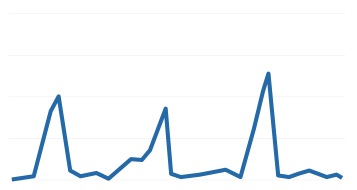
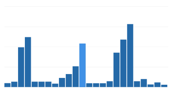
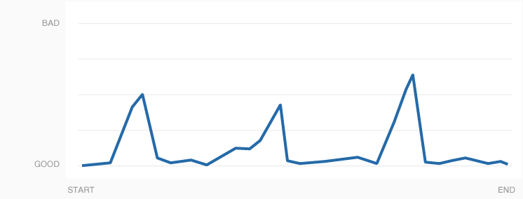

Region
IL
There is no On-Shelf data to display.

Get more data like this with a
New On-Shelf Audit Project
There is no Cooler data to display.
Get more data like this with a
New Cooler Audit Project
There is no Broker data to display.
Get more data like this with a
New Broker Audit Project
There is no Trade Marketing data to display.

Get more data like this with a
New Trade Marketing Audit Project
There is no POS data to display.
Get more data like this with a
New POS Audit Project
There is no On-Shelf data to display.

Get more data like this with a
New On-Shelf Audit Project
Same HTML as On-Shelf, but with dynamic content for Cooler
Same HTML as On-Shelf, but with dynamic content for Broker
Same HTML as On-Shelf, but with dynamic content for Trade Marketing
Same HTML as On-Shelf, but with dynamic content for POS
delete this, it's just to give me some scroll room while I'm working